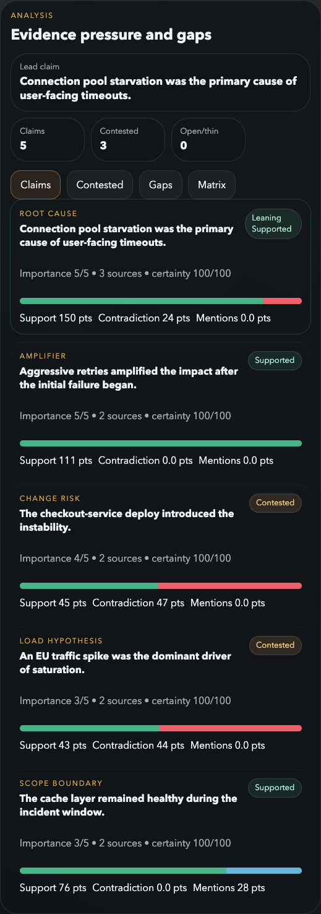

Step 1
The main claims view shows where the narrative is carrying real weight.
Claims are ranked by importance and evidence pressure, so the discussion starts with the issues that matter and already have signal attached.

Verdicts stay challengeable
“Supported” is derived from visible inputs, not hidden judgment.
Score rails show the tension
Support, contradiction, and mentions stay visible instead of collapsing into one number.